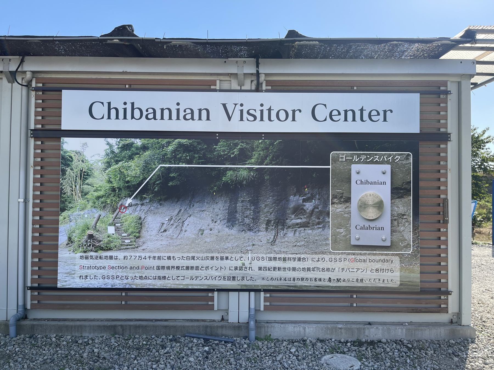
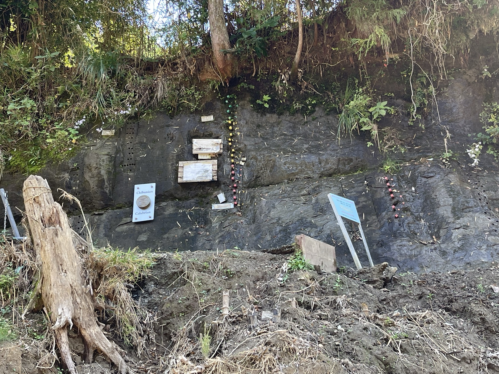
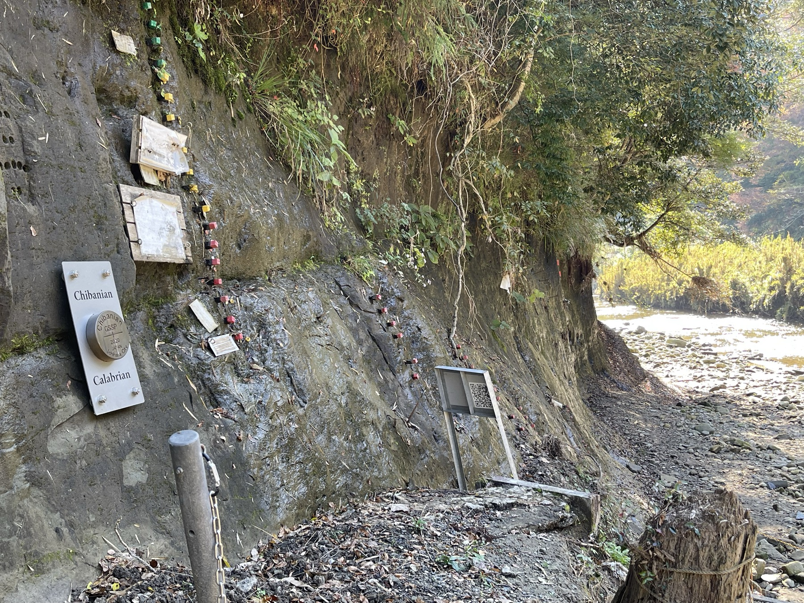
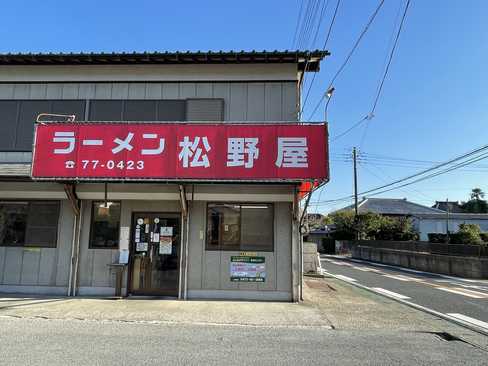
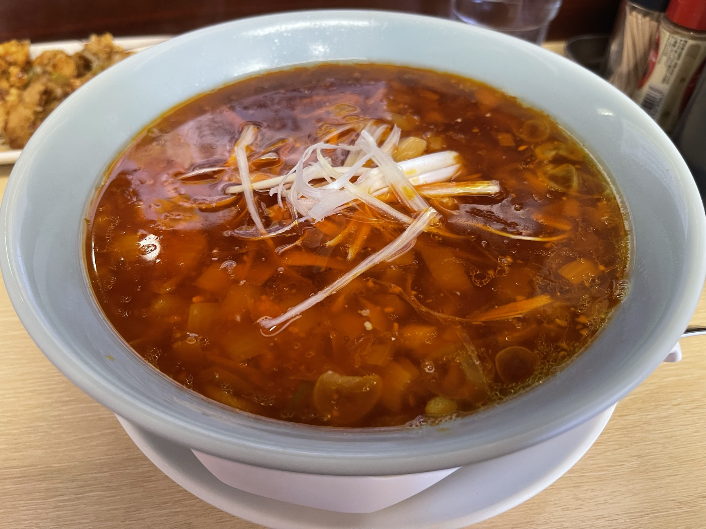
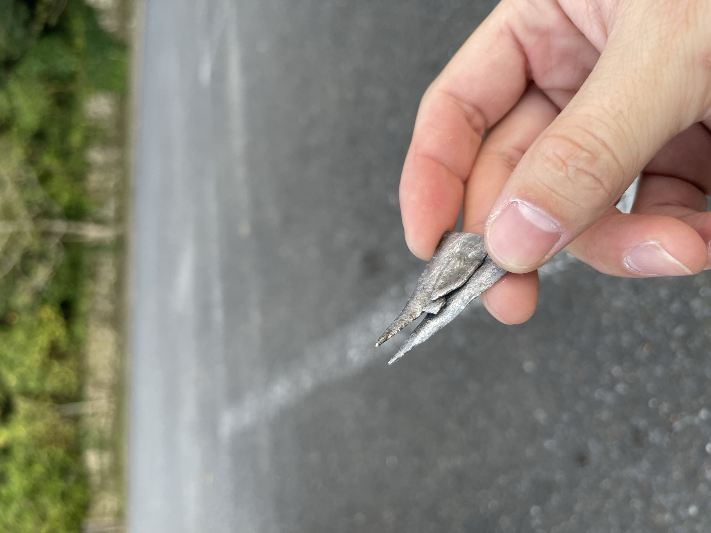

千葉県市原市の山中に、地球の歴史が刻まれた崖がある。チバニアン——地磁気が現在と逆だった時代の地層が露出しており、2020年に国際地質科学連合によって地球上の「地質時代の境界」を示す標準地層として認定された場所だ。
以前から気になっていたが、なかなか行くタイミングがなかった。11月の晴れた日、バイクを出した。
チバニアンへの道：猪と、解体現場
市原市の山道を走っていると、茂みの中から大きな音がした。振り向くと、猪が道を横切ろうとしている。そのまま走り去っていったが、距離にして2〜3メートルしかなかった。あれに突っ込まれたら、バイクでは勝ち目がない。しばらくエンジンをかけたまま立ち止まって、猪が完全に見えなくなってから走り出した。
さらに先を走ると、道端で猪を解体しているおじさんがいた。千葉の山では珍しくない光景なのかもしれないが、初めて目にするとなかなかの迫力だった。
チバニアンとは
チバニアンとは、地質時代区分の一つ「カラブリアン（後期更新世）」の中に設定された新たな時代区分「チバニアン（Chibanian）」の名称そのものだ。77万4000年前〜12万9000年前の地層に対応している。
なぜ千葉かというと、市原市田淵の「千葉セクション」と呼ばれる露頭が、この時代を最もよく記録している地層として世界的に選ばれたからだ。地層の中には、地磁気が逆転した（北と南が入れ替わった）痕跡がきれいに記録されている。

川沿いの遊歩道を少し歩くと、説明板の前に立てるようになっている。正直なところ、見た目はただの崖だ。しかしそこに7万年分の記録が積み重なっていると思うと、なんともいえない気分になる。


帰りにラーメンを食べた
チバニアンからの帰り道、近くにあったラーメン 松野屋に寄った。年季の入った外観の店で、地元の人が多く入っていた。


バイクにもトラブルが起きた
帰り道、後輪に違和感を感じた。走行感がわずかに変わった気がする。止まって確認すると、後輪に何か細いものが刺さっていた。

さらにしばらく走ると、今度はエンジン警告灯が点灯した。これには焦った。山の中でのエンジントラブルは洒落にならない。
結果から言うと、警告灯は走行中にセンサーが一時的に反応しただけで、走行に問題はなかった。後輪に刺さっていたものも、空気が抜けるほど深く刺さってはいなかったようで、自宅まで普通に帰れた。翌日バイク屋に持ち込んで確認してもらい、問題なしと言われた。
ひとりで山の中でエンジン警告灯が点灯したときの焦りは、体験した人にしかわからないと思う。
チバニアンは一見するとただの崖だが、解説を読みながら見ると面白い。遊歩道も整備されているので、バイクで行くにはちょうどいい小さな目的地になる。ただし、山道は猪に注意。